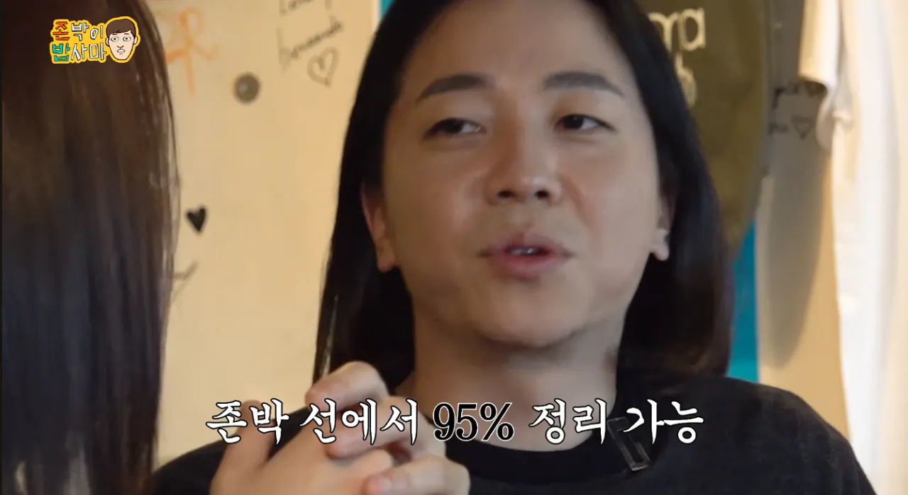

김하온이 그래도 국힙에서 좀 치는 애 아녀?

김하온이 그래도 국힙에서 좀 치는 애 아녀?

장문복선에서도 컷당할듯
맥날랩 이후 존박이 비트부터 찍은 재즈랩? 이거도 좋더라
잘하는 것과 좋은 것의 차이를 보여줬네
아 김하온 진짜 멋졌는데..... 어쩌다 저리됐냐;;;
딕션 차이 너무 심하네
주문 외우나 뭐래는거야?
곽진언 안녕히계세요 없어서 탈락!
김하온이 리듬 딱딱 맞고 귀에 쏙 들어오는데 뭥가 그루브는 존박이 수상힐 정도로 좋다
그냥 김하온?? 이친구가 일단 뭐라고 말하는지 잘 들리지가 않아. 존박랩은 라임을 살리면서도 가사가 또렷하게 들려. 성시경도 표정이 약간 음~ 인것 같은데?